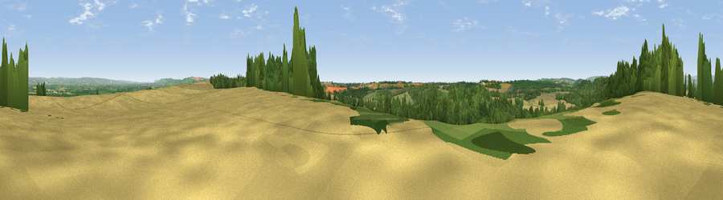

Viewpoint near Appleton le Street
#8640 in England · top 12% of its area beats it · near Appleton le StreetThe view, rendered

A 360° render of this exact spot computed from the terrain model, tree cover and land cover — summer colours, afternoon light, calibrated against photographs of famous viewpoints. Real trees, hedges and buildings will differ in detail.
The panorama
Grey silhouette: terrain skyline in each direction (720 bearings, Earth curvature and refraction included). Dashed green: skyline with trees (+15 m) and buildings (+8 m) as obstacles. Blue strip: how far the ground is visible on each bearing.
Where the view opens
Wedge length = distance to the farthest visible ground on that bearing (vegetation-aware). Rings at 10, 25 and 50 km.
What fills the view
46% cropland · 36% woodland · 18% grassland
Angular shares of the visible panorama (visual magnitude), not map area. Landscape diversity 0.46 (0–1 Shannon).
Key numbers
More beautiful places nearby
The staircase of upgrades: each row has a higher view potential than everything closer. Driving times are estimates from straight-line distance, calibrated against real road routing — check an actual route before setting out.
| Place | Direction | Drive | Score |
|---|---|---|---|
| Viewpoint near Coneysthorpe | NW · 1 km | ~4 min | 65.8 |
| Viewpoint near Terrington | W · 7 km | ~15 min | 70.4 |
| Viewpoint near Birdsall | SE · 11 km | ~21 min | 71.8 |
| Viewpoint near Leavening | SSE · 11 km | ~22 min | 73.7 |
| Viewpoint near Acklam | SSE · 13 km | ~24 min | 73.8 |
| Viewpoint near Ampleforth | WNW · 15 km | ~27 min | 76.6 |
| Viewpoint near Kilburn | WNW · 24 km | ~39 min | 79.3 |
| Hood Hill | WNW · 24 km | ~40 min | 79.6 |
54.13798, -0.88357 · source: screening · position refined by local search. Computed location — check access rights before visiting.